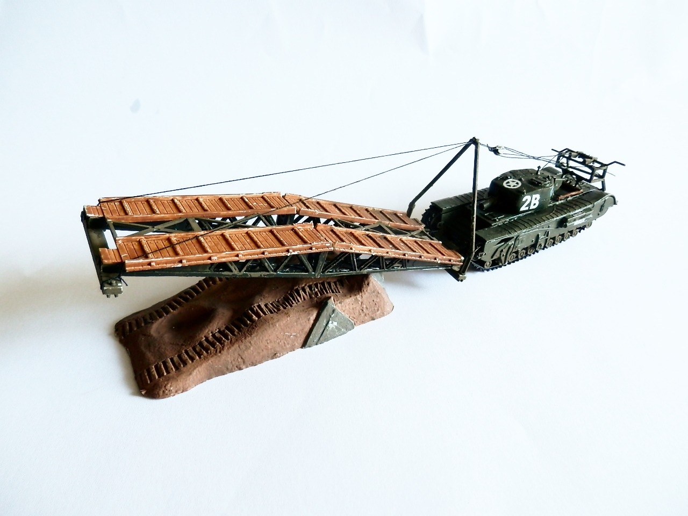
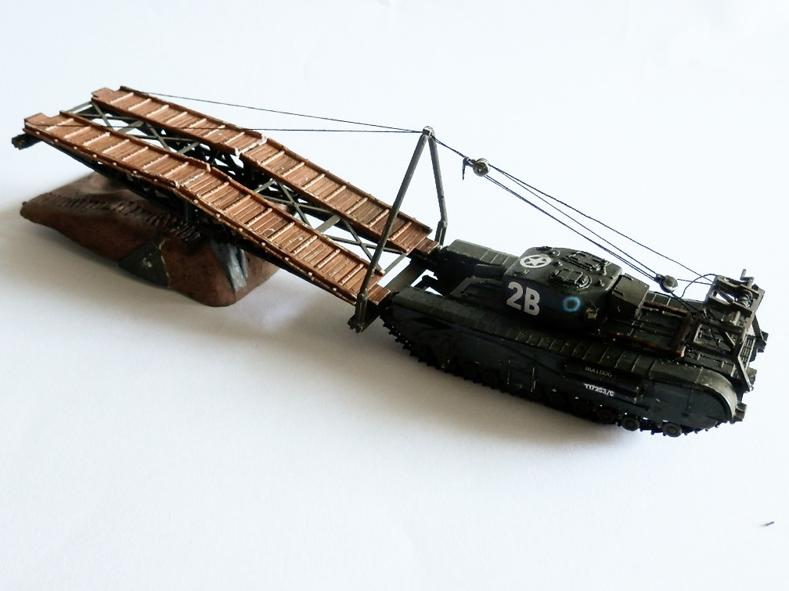

Mezzi militari · scale model archive
Churchill bridge layer Tank
Churchill bridge layer Tank — Kit: Matchbox, Scale: 1/72. Cute tiny little kit with working rigging of the bridge layer mechanism

Photo gallery

English description
Cute tiny little kit with working rigging of the bridge layer mechanism
Descrizione italiana
Piccolo kit molto simpatico, con il sistema di cavi del ponte funzionante.